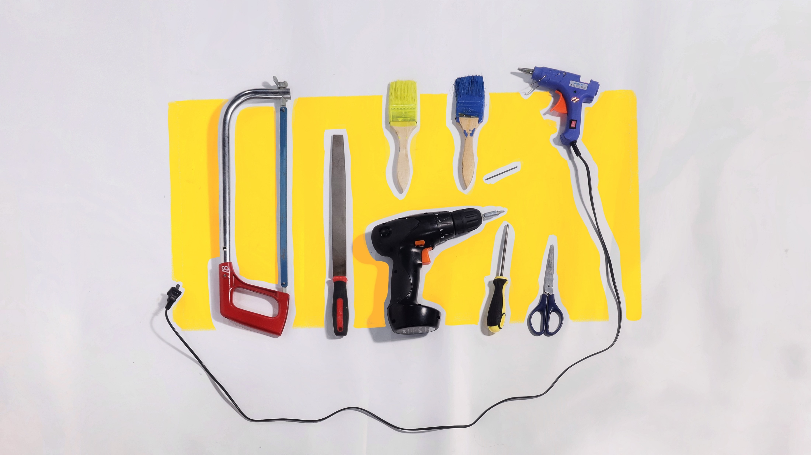
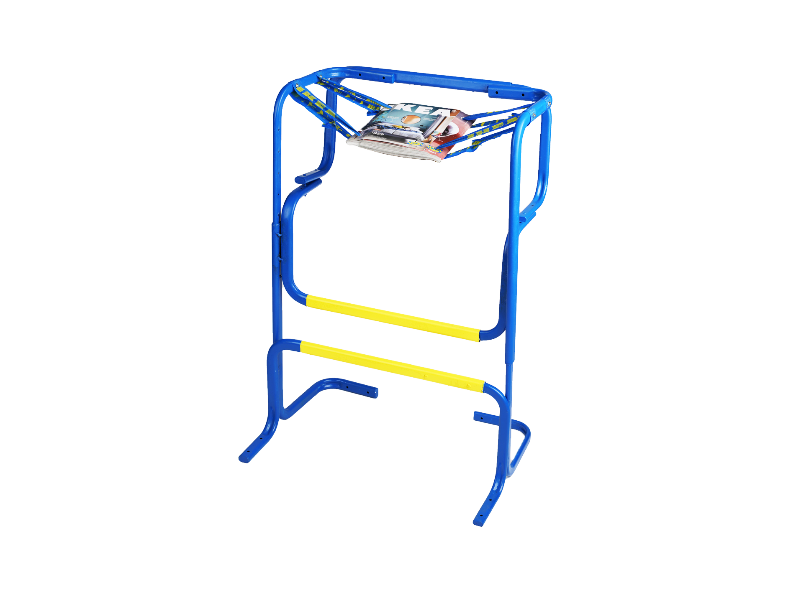

BOOK STOOL


一本书是脆弱的，很容易被摧毁，但当两本书一页页交错叠在一起时，却足够坚固以至无法被拉开。我对黑客精神的理解就是要挑战人们对现有事物的理解，所以我想通过一把高且脆弱，看上去危险不能够当作坐具的凳子，来挑战人对坐具稳固程度标准的认知。
A book is fragile and can be easily destroyed, but when two books are stacked on top of each other, they are strong enough to not be pulled apart. My understanding of the hacker spirit is to challenge people’s understanding of existing things, so I want to challenge people’s cognition of the standard of stools’ stability through a tall and fragile stool that looks dangerous and cannot be used as seat.